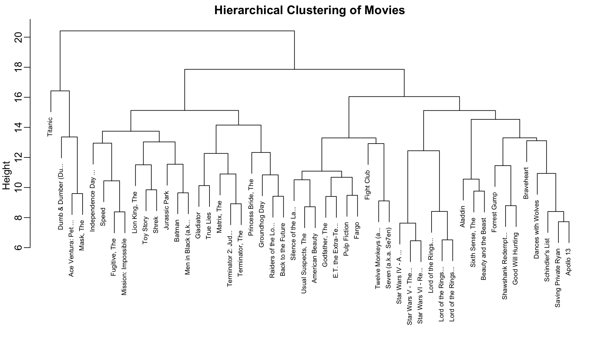
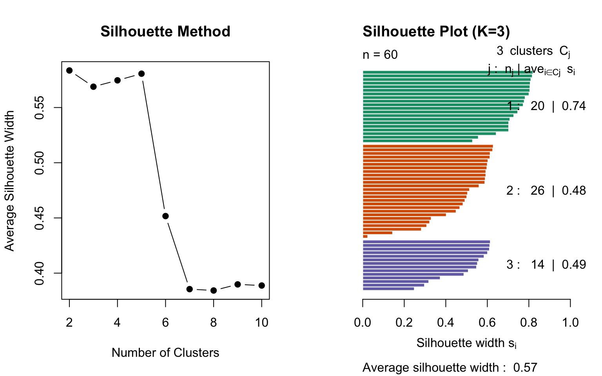
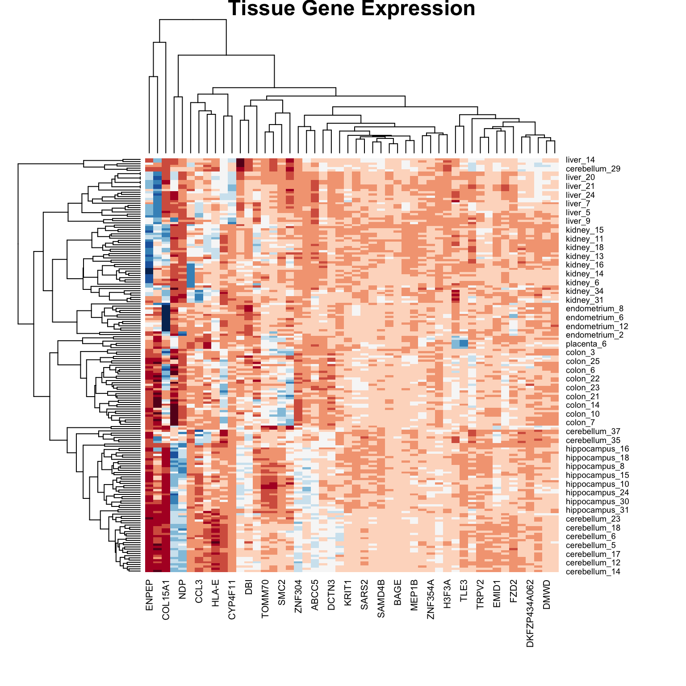

The machine learning algorithms we’ve discussed so far—regression, classification—are examples of supervised learning. The name comes from the fact that we use known outcomes (labels) in a training set to “supervise” the creation of our prediction algorithm.
Unsupervised learning is fundamentally different: we do not necessarily know the outcomes and instead are interested in discovering hidden structure in the data. Clustering algorithms are the most common unsupervised methods—they use features to group observations into clusters without predefined labels.
When Clustering is Useful
Clustering excels when:
You want to discover natural groupings in your data
Labels are unavailable or expensive to obtain
You’re performing exploratory data analysis
You need to segment populations for further study
Examples in biology:
Identifying cell types from single-cell RNA-seq data
Grouping patients by disease subtype
Finding functional modules in protein interaction networks
Classifying microbiome communities
Clustering Requires Distance
A first step in any clustering algorithm is defining a distance between observations. How we measure similarity fundamentally affects what clusters we find. We typically use Euclidean distance, but other metrics (Manhattan, correlation-based) are sometimes more appropriate.
36.2 A Motivating Example: Movie Ratings
Let’s construct a clustering example using movie ratings. We’ll identify whether there are natural groupings among popular movies based on how users rate them.
Code
library(dslabs)data("movielens")# Select 50 most-rated moviestop <- movielens %>%group_by(movieId) %>%summarize(n =n(), title =first(title)) %>%top_n(50, n) %>%pull(movieId)# Create rating matrix for users with at least 25 ratingsx <- movielens %>%filter(movieId %in% top) %>%group_by(userId) %>%filter(n() >=25) %>%ungroup() %>%select(title, userId, rating) %>%pivot_wider(names_from = userId, values_from = rating)row_names <-str_remove(x$title, ": Episode") %>%str_trunc(20)x <- x[, -1] %>%as.matrix()# Center by user and movie meansx <-sweep(x, 2, colMeans(x, na.rm =TRUE))x <-sweep(x, 1, rowMeans(x, na.rm =TRUE))rownames(x) <- row_names
We now have a matrix of centered ratings. Can we find groups of similar movies based on how users rate them?
Code
d <-dist(x)
36.3 Hierarchical Clustering
Hierarchical clustering builds a tree-like structure (dendrogram) showing nested relationships between observations or clusters.
The Agglomerative Algorithm
The most common approach is agglomerative (bottom-up) clustering:
Start with each observation as its own cluster
Find the two closest clusters and merge them
Repeat until all observations are in a single cluster
The result is a tree showing the sequence of merges
Code
h <-hclust(d)
Visualizing with Dendrograms
A dendrogram displays the hierarchical structure:
Code
rafalib::mypar()plot(h, cex =0.65, main ="Hierarchical Clustering of Movies", xlab ="")

Figure 36.1: Hierarchical clustering dendrogram of movies. Height indicates distance at which clusters merge. Movies that split at lower heights are more similar.
Interpreting Dendrograms
To find the distance between any two movies:
Start at the movies’ leaves
Move up until you reach the node where they first join
The height of that node is the distance between them
For example, the Star Wars movies merge at low heights (they’re similar), while the distance between Raiders of the Lost Ark and Silence of the Lambs is much greater.
Cutting the Tree to Form Clusters
To create discrete clusters, we “cut” the dendrogram either:
At a specified height (minimum distance for cluster membership)
Higher values (closer to 1) indicate better preservation of the original distance structure.
36.4 K-Means Clustering
K-means clustering partitions observations into exactly \(K\) groups by minimizing within-cluster variance. Unlike hierarchical clustering, you must specify \(K\) in advance.
The K-Means Algorithm
Initialize: Randomly select \(K\) cluster centers
Assign: Assign each observation to the nearest center
Update: Recompute centers as the mean of assigned observations
Repeat: Continue until assignments no longer change
The algorithm minimizes the within-cluster sum of squares (WSS): \[
\text{WSS} = \sum_{k=1}^{K} \sum_{x_i \in C_k} ||x_i - \mu_k||^2
\]
where \(\mu_k\) is the centroid of cluster \(k\).
K-Means in R
Code
# K-means requires no missing valuesx_0 <- xx_0[is.na(x_0)] <-0# Run k-means with 10 clustersset.seed(42)k <-kmeans(x_0, centers =10, nstart =25)# Cluster assignmentsgroups_km <- k$clustertable(groups_km)
The nstart parameter runs the algorithm multiple times with different random starts, selecting the best result. This is important because k-means can converge to local optima.
Figure 36.3: K-means clustering on simulated data with three natural clusters
36.5 Choosing the Number of Clusters
A fundamental challenge in clustering is determining the appropriate number of clusters. Several methods can help:
The Elbow Method
Plot within-cluster sum of squares against \(K\) and look for an “elbow” where the rate of decrease slows:
Code
wss <-sapply(1:10, function(k) {kmeans(sample_data, centers = k, nstart =20)$tot.withinss})plot(1:10, wss, type ="b", pch =19,xlab ="Number of Clusters (K)",ylab ="Total Within-Cluster Sum of Squares",main ="Elbow Method")
Figure 36.4: Elbow method for selecting number of clusters. Look for the ‘bend’ in the curve where adding more clusters provides diminishing returns.
Silhouette Analysis
The silhouette score measures how similar an observation is to its own cluster compared to other clusters:
\[
s(i) = \frac{b(i) - a(i)}{\max(a(i), b(i))}
\]
where: - \(a(i)\) = average distance to other points in the same cluster - \(b(i)\) = average distance to points in the nearest other cluster
Values range from -1 to 1: - Close to 1: well-clustered - Close to 0: on the boundary - Negative: possibly misclassified
Code
library(cluster)# Calculate silhouette scores for different Ksil_width <-sapply(2:10, function(k) { km <-kmeans(sample_data, centers = k, nstart =20) ss <-silhouette(km$cluster, dist(sample_data))mean(ss[, "sil_width"])})par(mfrow =c(1, 2))plot(2:10, sil_width, type ="b", pch =19,xlab ="Number of Clusters",ylab ="Average Silhouette Width",main ="Silhouette Method")# Detailed silhouette plot for K=3km_3 <-kmeans(sample_data, centers =3, nstart =20)sil_3 <-silhouette(km_3$cluster, dist(sample_data))plot(sil_3, col =1:3, main ="Silhouette Plot (K=3)")

Figure 36.5: Silhouette analysis for different numbers of clusters. Higher average silhouette width indicates better-defined clusters.
Gap Statistic
The gap statistic compares the within-cluster dispersion to that expected under a null reference distribution:
Code
library(cluster)gap_stat <-clusGap(sample_data, FUN = kmeans, nstart =25, K.max =10, B =50)plot(gap_stat, main ="Gap Statistic")
36.6 Heatmaps
Heatmaps are powerful visualization tools that combine clustering with color-coded data display. They’re particularly useful for high-dimensional data like gene expression matrices.
Basic Heatmap Construction
The idea:
Plot the data matrix as an image (colors represent values)
Cluster rows (observations) and reorder by similarity
Cluster columns (features) and reorder by similarity
Display dendrograms showing the hierarchical structure
Heatmaps in R
Code
data("tissue_gene_expression")# Center the datax_tissue <-sweep(tissue_gene_expression$x, 2,colMeans(tissue_gene_expression$x))# Basic heatmap (subsample for visibility)set.seed(42)gene_sample <-sample(1:ncol(x_tissue), 50)heatmap(x_tissue[, gene_sample],col =brewer.pal(11, "RdBu"),margins =c(8, 8),cexRow =0.7,main ="Tissue Gene Expression")

Figure 36.6: Heatmap of tissue gene expression data with hierarchical clustering on both rows and columns
# Compare clusters to known tissue labelstable(Cluster = km_3$cluster, True = sample_data$x >2)
True
Cluster FALSE TRUE
1 20 0
2 0 26
3 11 3
Reproducibility
K-means depends on random initialization. Always:
Set a seed for reproducibility
Use nstart to run multiple initializations
Report the random seed used
36.8 Exercises
Exercise Clu.1: Distance Computation
Load the tissue_gene_expression dataset. Remove the row means and compute the distance between each observation. Store the result in d.
Exercise Clu.2: Hierarchical Clustering
Make a hierarchical clustering plot and add the tissue types as labels. Which tissues cluster together?
Exercise Clu.3: K-Means Clustering
Run k-means clustering on the data with \(K = 7\). Make a table comparing the identified clusters to the actual tissue types. Run the algorithm several times to see how the answer changes.
Exercise Clu.4: Heatmap Visualization
Select the 50 most variable genes. Create a heatmap with:
Observations in columns
Centered predictors
A color bar showing tissue types
Use ColSideColors argument and col = brewer.pal(11, "RdBu")
Exercise Clu.5: Comparing Linkage Methods
Compare different linkage methods on the movie data. Which produces the most interpretable clusters?
36.9 K-Means vs Hierarchical Clustering
Aspect
K-Means
Hierarchical
Clusters
Must specify K
Can cut at any level
Structure
Flat partition
Nested hierarchy
Scalability
O(nKt) - efficient
O(n³) - slower
Shape
Spherical clusters
Arbitrary shapes
Missing data
Cannot handle
Some methods can
Reproducibility
Depends on initialization
Deterministic
36.10 Summary
Unsupervised learning discovers structure without predefined labels
Hierarchical clustering builds a tree showing nested relationships
Heatmaps combine clustering with data visualization
Color encodes values
Rows and columns reordered by similarity
Filter to high-variance features for clarity
Choosing K requires judgment and multiple criteria
Elbow method: look for bend in WSS curve
Silhouette analysis: measure cluster coherence
Domain knowledge should guide interpretation
36.11 Additional Resources
James et al. (2023) - Comprehensive treatment of clustering methods
Logan (2010) - Applications in biological research
Hahsler, M., Piekenbrock, M., & Doran, D. (2019). dbscan: Fast Density-Based Clustering with R
pheatmap and ComplexHeatmap package documentation for advanced heatmaps
James, Gareth, Daniela Witten, Trevor Hastie, and Robert Tibshirani. 2023. An Introduction to Statistical Learning with Applications in r. 2nd ed. Springer. https://www.statlearning.com.
Logan, Murray. 2010. Biostatistical Design and Analysis Using r. Wiley-Blackwell.
Source Code
# Clustering {#sec-clustering}```{r}#| echo: false#| message: falselibrary(tidyverse)library(RColorBrewer)theme_set(theme_minimal())```## Introduction to Unsupervised LearningThe machine learning algorithms we've discussed so far—regression, classification—are examples of **supervised learning**. The name comes from the fact that we use known outcomes (labels) in a training set to "supervise" the creation of our prediction algorithm.**Unsupervised learning** is fundamentally different: we do not necessarily know the outcomes and instead are interested in discovering hidden structure in the data. Clustering algorithms are the most common unsupervised methods—they use features to group observations into clusters without predefined labels.### When Clustering is UsefulClustering excels when:- You want to discover natural groupings in your data- Labels are unavailable or expensive to obtain- You're performing exploratory data analysis- You need to segment populations for further studyExamples in biology:- Identifying cell types from single-cell RNA-seq data- Grouping patients by disease subtype- Finding functional modules in protein interaction networks- Classifying microbiome communities### Clustering Requires DistanceA first step in any clustering algorithm is defining a **distance** between observations. How we measure similarity fundamentally affects what clusters we find. We typically use Euclidean distance, but other metrics (Manhattan, correlation-based) are sometimes more appropriate.## A Motivating Example: Movie RatingsLet's construct a clustering example using movie ratings. We'll identify whether there are natural groupings among popular movies based on how users rate them.```{r}library(dslabs)data("movielens")# Select 50 most-rated moviestop <- movielens %>%group_by(movieId) %>%summarize(n =n(), title =first(title)) %>%top_n(50, n) %>%pull(movieId)# Create rating matrix for users with at least 25 ratingsx <- movielens %>%filter(movieId %in% top) %>%group_by(userId) %>%filter(n() >=25) %>%ungroup() %>%select(title, userId, rating) %>%pivot_wider(names_from = userId, values_from = rating)row_names <-str_remove(x$title, ": Episode") %>%str_trunc(20)x <- x[, -1] %>%as.matrix()# Center by user and movie meansx <-sweep(x, 2, colMeans(x, na.rm =TRUE))x <-sweep(x, 1, rowMeans(x, na.rm =TRUE))rownames(x) <- row_names```We now have a matrix of centered ratings. Can we find groups of similar movies based on how users rate them?```{r}d <-dist(x)```## Hierarchical Clustering**Hierarchical clustering** builds a tree-like structure (dendrogram) showing nested relationships between observations or clusters.### The Agglomerative AlgorithmThe most common approach is **agglomerative** (bottom-up) clustering:1. Start with each observation as its own cluster2. Find the two closest clusters and merge them3. Repeat until all observations are in a single cluster4. The result is a tree showing the sequence of merges```{r}h <-hclust(d)```### Visualizing with DendrogramsA **dendrogram** displays the hierarchical structure:```{r}#| label: fig-dendrogram#| fig-cap: "Hierarchical clustering dendrogram of movies. Height indicates distance at which clusters merge. Movies that split at lower heights are more similar."#| fig-width: 10#| fig-height: 6rafalib::mypar()plot(h, cex =0.65, main ="Hierarchical Clustering of Movies", xlab ="")```### Interpreting DendrogramsTo find the distance between any two movies:1. Start at the movies' leaves2. Move up until you reach the node where they first join3. The height of that node is the distance between themFor example, the Star Wars movies merge at low heights (they're similar), while the distance between Raiders of the Lost Ark and Silence of the Lambs is much greater.### Cutting the Tree to Form ClustersTo create discrete clusters, we "cut" the dendrogram either:1. At a specified height (minimum distance for cluster membership)2. To obtain a specified number of clusters```{r}groups <-cutree(h, k =10)```Let's examine some of the resulting clusters:```{r}# Blockbusters clustercat("Cluster 4 (Blockbusters):\n")names(groups)[groups ==4]``````{r}# Another clustercat("\nCluster 9:\n")names(groups)[groups ==9]```The clustering reveals meaningful groupings—similar genres and franchises cluster together.### Linkage MethodsDifferent **linkage methods** define how cluster-to-cluster distance is computed:| Method | Description | Characteristics ||:-------|:------------|:----------------|| **Complete** | Maximum distance between any two points | Produces compact, spherical clusters || **Single** | Minimum distance between any two points | Tends to create elongated chains || **Average** | Mean distance between all pairs | Balanced approach || **Ward's** | Minimizes within-cluster variance | Often produces most interpretable clusters |```{r}#| label: fig-linkage-comparison#| fig-cap: "Comparison of different linkage methods on the same data. Each method produces different cluster structures."#| fig-width: 10#| fig-height: 8# Create sample data for comparisonset.seed(123)sample_data <-data.frame(x =c(rnorm(20, 0, 1), rnorm(20, 4, 1), rnorm(20, 2, 3)),y =c(rnorm(20, 0, 1), rnorm(20, 4, 1), rnorm(20, 8, 1)))dist_matrix <-dist(sample_data)par(mfrow =c(2, 2))plot(hclust(dist_matrix, method ="single"), main ="Single Linkage", xlab ="")plot(hclust(dist_matrix, method ="complete"), main ="Complete Linkage", xlab ="")plot(hclust(dist_matrix, method ="average"), main ="Average Linkage", xlab ="")plot(hclust(dist_matrix, method ="ward.D2"), main ="Ward's Method", xlab ="")```::: {.callout-tip}## Choosing a Linkage Method- **Ward's method** often produces the most interpretable clusters and is a good default- **Complete linkage** is useful when you want compact clusters- **Single linkage** can detect elongated structures but is sensitive to noise- **Average linkage** is a compromise between single and complete:::### Mathematical Properties**Cophenetic correlation** measures how well the dendrogram preserves original distances:```{r}# Cophenetic correlation for Ward's methodhc_ward <-hclust(dist_matrix, method ="ward.D2")cophenetic_dist <-cophenetic(hc_ward)cor(dist_matrix, cophenetic_dist)```Higher values (closer to 1) indicate better preservation of the original distance structure.## K-Means Clustering**K-means clustering** partitions observations into exactly $K$ groups by minimizing within-cluster variance. Unlike hierarchical clustering, you must specify $K$ in advance.### The K-Means Algorithm1. **Initialize**: Randomly select $K$ cluster centers2. **Assign**: Assign each observation to the nearest center3. **Update**: Recompute centers as the mean of assigned observations4. **Repeat**: Continue until assignments no longer changeThe algorithm minimizes the **within-cluster sum of squares (WSS)**:$$\text{WSS} = \sum_{k=1}^{K} \sum_{x_i \in C_k} ||x_i - \mu_k||^2$$where $\mu_k$ is the centroid of cluster $k$.### K-Means in R```{r}# K-means requires no missing valuesx_0 <- xx_0[is.na(x_0)] <-0# Run k-means with 10 clustersset.seed(42)k <-kmeans(x_0, centers =10, nstart =25)# Cluster assignmentsgroups_km <- k$clustertable(groups_km)```The `nstart` parameter runs the algorithm multiple times with different random starts, selecting the best result. This is important because k-means can converge to local optima.### Comparing to Hierarchical Clustering```{r}# Compare k-means to hierarchical clusteringtable(KMeans = groups_km, Hierarchical = groups)```### Visualizing K-Means Results```{r}#| label: fig-kmeans-example#| fig-cap: "K-means clustering on simulated data with three natural clusters"#| fig-width: 7#| fig-height: 5# Demonstrate k-means on 2D dataset.seed(42)km_example <-kmeans(sample_data, centers =3, nstart =25)plot(sample_data$x, sample_data$y,col = km_example$cluster,pch =19, cex =1.5,xlab ="X", ylab ="Y",main ="K-Means Clustering (K=3)")points(km_example$centers, pch =4, cex =3, lwd =3)legend("topleft", c("Cluster 1", "Cluster 2", "Cluster 3", "Centers"),col =c(1, 2, 3, 1), pch =c(19, 19, 19, 4))```## Choosing the Number of ClustersA fundamental challenge in clustering is determining the appropriate number of clusters. Several methods can help:### The Elbow MethodPlot within-cluster sum of squares against $K$ and look for an "elbow" where the rate of decrease slows:```{r}#| label: fig-elbow-method#| fig-cap: "Elbow method for selecting number of clusters. Look for the 'bend' in the curve where adding more clusters provides diminishing returns."#| fig-width: 7#| fig-height: 5wss <-sapply(1:10, function(k) {kmeans(sample_data, centers = k, nstart =20)$tot.withinss})plot(1:10, wss, type ="b", pch =19,xlab ="Number of Clusters (K)",ylab ="Total Within-Cluster Sum of Squares",main ="Elbow Method")```### Silhouette AnalysisThe **silhouette score** measures how similar an observation is to its own cluster compared to other clusters:$$s(i) = \frac{b(i) - a(i)}{\max(a(i), b(i))}$$where:- $a(i)$ = average distance to other points in the same cluster- $b(i)$ = average distance to points in the nearest other clusterValues range from -1 to 1:- Close to 1: well-clustered- Close to 0: on the boundary- Negative: possibly misclassified```{r}#| label: fig-silhouette#| fig-cap: "Silhouette analysis for different numbers of clusters. Higher average silhouette width indicates better-defined clusters."#| fig-width: 8#| fig-height: 5library(cluster)# Calculate silhouette scores for different Ksil_width <-sapply(2:10, function(k) { km <-kmeans(sample_data, centers = k, nstart =20) ss <-silhouette(km$cluster, dist(sample_data))mean(ss[, "sil_width"])})par(mfrow =c(1, 2))plot(2:10, sil_width, type ="b", pch =19,xlab ="Number of Clusters",ylab ="Average Silhouette Width",main ="Silhouette Method")# Detailed silhouette plot for K=3km_3 <-kmeans(sample_data, centers =3, nstart =20)sil_3 <-silhouette(km_3$cluster, dist(sample_data))plot(sil_3, col =1:3, main ="Silhouette Plot (K=3)")```### Gap StatisticThe gap statistic compares the within-cluster dispersion to that expected under a null reference distribution:```{r}#| eval: falselibrary(cluster)gap_stat <-clusGap(sample_data, FUN = kmeans, nstart =25, K.max =10, B =50)plot(gap_stat, main ="Gap Statistic")```## Heatmaps**Heatmaps** are powerful visualization tools that combine clustering with color-coded data display. They're particularly useful for high-dimensional data like gene expression matrices.### Basic Heatmap ConstructionThe idea:1. Plot the data matrix as an image (colors represent values)2. Cluster rows (observations) and reorder by similarity3. Cluster columns (features) and reorder by similarity4. Display dendrograms showing the hierarchical structure### Heatmaps in R```{r}#| label: fig-heatmap-basic#| fig-cap: "Heatmap of tissue gene expression data with hierarchical clustering on both rows and columns"#| fig-width: 8#| fig-height: 8data("tissue_gene_expression")# Center the datax_tissue <-sweep(tissue_gene_expression$x, 2,colMeans(tissue_gene_expression$x))# Basic heatmap (subsample for visibility)set.seed(42)gene_sample <-sample(1:ncol(x_tissue), 50)heatmap(x_tissue[, gene_sample],col =brewer.pal(11, "RdBu"),margins =c(8, 8),cexRow =0.7,main ="Tissue Gene Expression")```### Customizing Heatmaps with Color BarsAdding color bars shows group membership:```{r}#| label: fig-heatmap-colorbar#| fig-cap: "Heatmap with color sidebar indicating tissue type. Hierarchical clustering reveals that samples group by tissue."#| fig-width: 9#| fig-height: 8# Color palette for tissuestissue_colors <-brewer.pal(7, "Set2")[as.numeric(tissue_gene_expression$y)]# Heatmap with row colorsheatmap(x_tissue[, gene_sample],col =brewer.pal(11, "RdBu"),RowSideColors = tissue_colors,margins =c(8, 10),cexRow =0.7,main ="Tissue Gene Expression")# Add legendlegend("topright", legend =levels(tissue_gene_expression$y),fill =brewer.pal(7, "Set2"), cex =0.7, bty ="n")```### Filtering Features for Better VisualizationNot all features contribute meaningful information to clustering. Filtering to high-variance features often improves visualization:```{r}#| label: fig-heatmap-filtered#| fig-cap: "Heatmap of the 50 most variable genes. High-variance features often reveal the most interesting biological patterns."#| fig-width: 9#| fig-height: 8library(matrixStats)# Select 50 most variable genessds <-colSds(x_tissue, na.rm =TRUE)top_genes <-order(sds, decreasing =TRUE)[1:50]heatmap(x_tissue[, top_genes],col =brewer.pal(11, "RdBu"),RowSideColors = tissue_colors,margins =c(10, 10),cexRow =0.7, cexCol =0.6,main ="Top 50 Variable Genes")```### Advanced Heatmaps with pheatmapThe `pheatmap` package provides more control and better aesthetics:```{r}#| label: fig-pheatmap#| fig-cap: "Enhanced heatmap using pheatmap with annotation tracks and customized appearance"#| fig-width: 9#| fig-height: 7#| message: falselibrary(pheatmap)# Prepare annotationannotation_row <-data.frame(Tissue = tissue_gene_expression$y,row.names =rownames(x_tissue))pheatmap(x_tissue[, top_genes],color =colorRampPalette(brewer.pal(11, "RdBu"))(100),annotation_row = annotation_row,show_rownames =FALSE,show_colnames =FALSE,main ="Tissue Gene Expression Heatmap",fontsize =8)```## Practical Considerations### StandardizationFeatures on different scales should be standardized before clustering:```{r}# Standardize featuresx_scaled <-scale(x_tissue)# This ensures all features contribute equally to distance calculations```### Handling Missing DataK-means cannot handle missing values. Options include:1. Remove observations or features with missing data2. Impute missing values3. Use algorithms that handle missingness (some hierarchical methods)### Cluster ValidationHow do we know if clusters are "real"? Several approaches:1. **Stability**: Do clusters persist across different subsamples?2. **External validation**: Do clusters correspond to known groups?3. **Internal metrics**: Silhouette scores, within-cluster variance```{r}# Compare clusters to known tissue labelstable(Cluster = km_3$cluster, True = sample_data$x >2)```### ReproducibilityK-means depends on random initialization. Always:1. Set a seed for reproducibility2. Use `nstart` to run multiple initializations3. Report the random seed used## Exercises::: {.callout-note}### Exercise Clu.1: Distance Computation1. Load the `tissue_gene_expression` dataset. Remove the row means and compute the distance between each observation. Store the result in `d`.:::::: {.callout-note}### Exercise Clu.2: Hierarchical Clustering2. Make a hierarchical clustering plot and add the tissue types as labels. Which tissues cluster together?:::::: {.callout-note}### Exercise Clu.3: K-Means Clustering3. Run k-means clustering on the data with $K = 7$. Make a table comparing the identified clusters to the actual tissue types. Run the algorithm several times to see how the answer changes.:::::: {.callout-note}### Exercise Clu.4: Heatmap Visualization4. Select the 50 most variable genes. Create a heatmap with: - Observations in columns - Centered predictors - A color bar showing tissue types - Use `ColSideColors` argument and `col = brewer.pal(11, "RdBu")`:::::: {.callout-note}### Exercise Clu.5: Comparing Linkage Methods5. Compare different linkage methods on the movie data. Which produces the most interpretable clusters?:::## K-Means vs Hierarchical Clustering| Aspect | K-Means | Hierarchical ||:-------|:--------|:-------------|| Clusters | Must specify K | Can cut at any level || Structure | Flat partition | Nested hierarchy || Scalability | O(nKt) - efficient | O(n³) - slower || Shape | Spherical clusters | Arbitrary shapes || Missing data | Cannot handle | Some methods can || Reproducibility | Depends on initialization | Deterministic |## Summary- **Unsupervised learning** discovers structure without predefined labels- **Hierarchical clustering** builds a tree showing nested relationships - Dendrograms visualize the hierarchy - Linkage methods define cluster-to-cluster distance - Cut the tree to form discrete clusters- **K-means clustering** partitions data into K groups - Minimizes within-cluster variance - Requires specifying K in advance - Use multiple starts to avoid local optima- **Heatmaps** combine clustering with data visualization - Color encodes values - Rows and columns reordered by similarity - Filter to high-variance features for clarity- **Choosing K** requires judgment and multiple criteria - Elbow method: look for bend in WSS curve - Silhouette analysis: measure cluster coherence - Domain knowledge should guide interpretation## Additional Resources- @james2023islr - Comprehensive treatment of clustering methods- @logan2010biostatistical - Applications in biological research- Hahsler, M., Piekenbrock, M., & Doran, D. (2019). dbscan: Fast Density-Based Clustering with R- `pheatmap` and `ComplexHeatmap` package documentation for advanced heatmaps